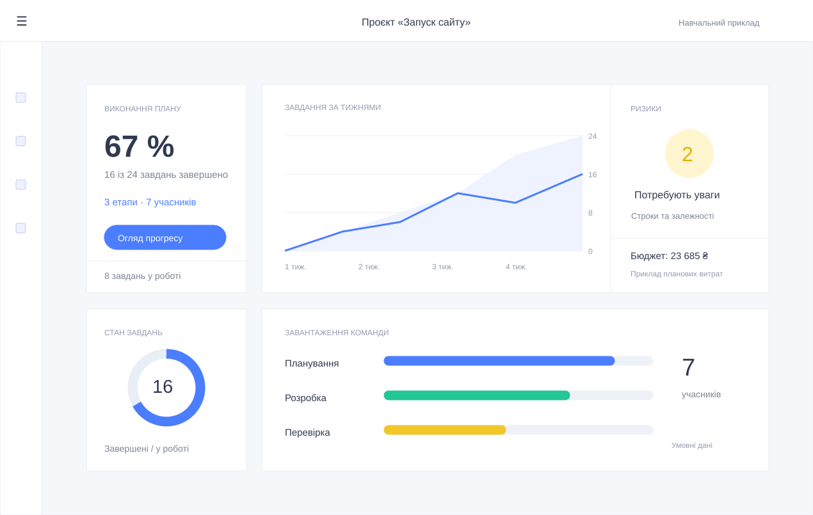
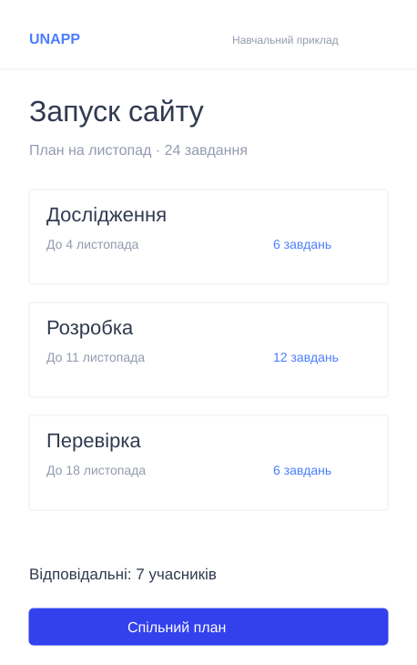
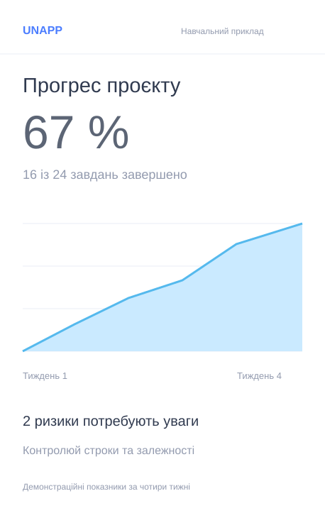

Планування завдань
Розділяй проєкт на етапи, визначай пріоритети й відповідальних. Узгоджений план допомагає команді рухатися до спільної мети.
Завдання, строки й аналітика в одному просторі

Розділяй проєкт на етапи, визначай пріоритети й відповідальних. Узгоджений план допомагає команді рухатися до спільної мети.
Порівнюй обсяг роботи з доступністю учасників. Помічай перевантаження завчасно та розподіляй завдання рівномірніше.
Зіставляй план і факт, контролюй бюджет і строки. Зрозумілі показники допомагають бачити відхилення та обирати наступні кроки.
Об’єднуй завдання, відповідальних і строки навколо мети проєкту. Спільна картина роботи допомагає узгоджувати пріоритети, обговорювати перешкоди та вчасно коригувати план.

Починай з мети й очікуваного результату. Розбий роботу на зрозумілі етапи та визнач, які завдання залежать одне від одного.
Для кожного завдання признач відповідального й строк. Враховуй доступність учасників, щоб план був реалістичним.
Регулярно переглядай прогрес. Якщо виникає перешкода, узгодь нові пріоритети та повідом команду про зміни.

Порівнюй заплановану та завершену роботу. Відстежуй зміни показників за період, щоб розуміти темп виконання.
Звертай увагу на прострочені завдання й ризики. Ранній сигнал дає час переглянути обсяг роботи або додати ресурси.
Підсумовуй результати етапу коротким звітом. Фіксуй висновки, які допоможуть точніше спланувати наступний цикл.
3
Етапи у прикладі проєкту
24
Завдання у демонстраційному плані
7
Учасників навчальної команди
Короткі матеріали про планування, корисні показники й командну роботу. Практичні орієнтири, які допомагають краще організувати наступний етап.
Почни з мети, розбий роботу на етапи та визнач залежності. Додавай резерв часу для завдань, у яких найбільше невідомого.
Порівнюй план і факт, стеж за простроченими завданнями та залишком бюджету. Обирай показники, що допомагають ухвалювати рішення.
Оцінюй доступний час учасників перед призначенням роботи. Перевантаження однієї людини може затримати весь етап.
Залиш адресу для демонстраційної перевірки форми підписки.
Навчальна форма. Листи не надсилаються.
Приклад пакетів для різних масштабів роботи. Ціни й ліміти наведено для навчальної моделі сервісу; оплата на сайті не проводиться.
До 3 проєктів і 5 учасників. Планування завдань, строки та базовий огляд прогресу для невеликої команди.
До 10 проєктів і 15 учасників. Порівняння плану й факту та огляд завантаження команди.
До 30 проєктів і 50 учасників. Контроль бюджету, аналіз ризиків і розширені звіти за період.
Без ліміту проєктів у навчальній моделі. Зведений огляд портфеля, команд і ключових показників.
Розкажи про потреби своєї команди. Це демонстраційна форма: дані перевіряються у браузері, без надсилання та збереження.